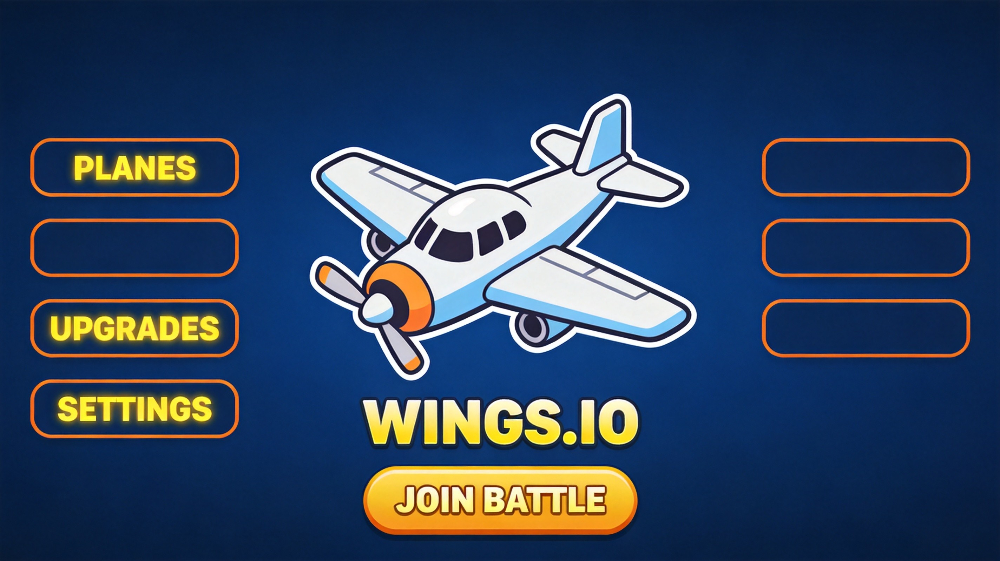
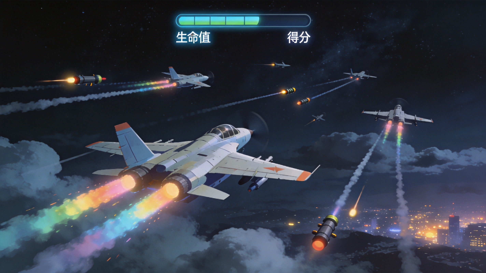

The Hard Truth About Your Wings.io Runs
You spawn in, grab your default machine gun, fly straight toward the nearest enemy, and get obliterated in seconds. Sound familiar? I have poured over 2000 hours into Wings.io. I have watched countless pilots make the exact same lethal errors over and over. You treat this aerial dogfight arena like it is a simple point-and-shoot game. It is not. It is a fast-paced multiplayer arena where movement patterns, weapon management, radar awareness, and map positioning separate the aces from the casualties. Every time you get eliminated early, it is because you are ignoring the mechanics that actually keep you alive in the sky. Read this guide. Internalize these mistakes. Fix your aerial gameplay, or stay stuck at the bottom of the leaderboard forever.

| # | Mistake | Quick Fix |
|---|---|---|
| 1 | Flying in Predictable Straight Lines | Constantly vary your altitude and direction to become a near-impossible target |
| 2 | Sticking With the Default Machine Gun | Prioritize collecting higher-tier power-ups immediately after spawning |
| 3 | Ignoring the Radar Completely | Glance at the bottom radar every few seconds to track nearby threats |
| 4 | Wasting Zoom Boost on Straight Chases | Save Zoom for紧急 escapes and surprise attack approaches only |
| 5 | Diving Into the Center Immediately | Start at the top of the map farming power-ups safely before engaging |
| 6 | Flying Too Close to Map Edges | Stay within the central arena and watch for the abandonment warning |
Flying in Predictable Straight Lines
You point your plane at an enemy and fly directly toward them in a straight line, holding the mouse steady. You think closing distance fast means you can land more hits. You fly the same altitude, the same speed, the same direction for seconds at a time. You do not curve, you do not dodge, you do not vary your flight path at all. You are basically painting a giant target on your fuselage for every pilot in the arena.
Wings.io is a full 360-degree aerial arena. Every other player can see you coming from miles away when you fly in a straight line. A skilled pilot with missiles or a beam weapon will lock onto your predictable trajectory and land every single shot. Your default machine gun has limited range, so you need to close distance to deal damage. But closing distance in a straight line means you absorb maximum incoming fire before you even get in range. Against any upgraded weapon, you will be shredded before your bullets connect. Straight-line flight is the number one killer of new pilots.
Constantly vary your altitude and direction. Use sweeping curves and S-shaped flight paths to make yourself nearly impossible to hit. When approaching an enemy, never fly directly at them. Come in from an angle, curve above or below, and use the terrain to break their line of sight. Master the quick turn by swiftly moving your cursor across your plane for a rapid 180-degree reversal. If an enemy is tracking you, change direction unexpectedly. The pilots who survive longest in Wings.io are the ones who fly like they are drunk — unpredictable and erratic. Make them waste their ammo chasing ghosts.
Sticking With the Default Machine Gun
You spawn with the standard infinite machine gun and just keep using it for the entire match. You see power-ups floating down from the sky — missiles, beams, bombs, grapeshot — but you ignore them because your current weapon feels comfortable. You think the default gun is good enough. You do not realize that every other weapon in the game vastly outperforms it. You fly around with a toy while other pilots are packing serious firepower.
The default machine gun deals minimal damage and has short range. It is designed as a starter weapon, not a competitive one. Missiles auto-lock onto targets and deal massive damage. Beams deal critical damage that makes planes fall instantly. Bombs drop in a devastating line. Grapeshot fires three-burst spreads that triple your damage output. When you refuse to pick up power-ups, you are bringing a knife to a gunfight. A single missile hit from a competent pilot will destroy you while your machine gun bullets bounce off harmlessly. The weapon gap is the single biggest disadvantage you can have in Wings.io.
Make power-up collection your top priority during the first two minutes of every match. Power-ups descend slowly from the sky and also drop from defeated players. Each pickup changes your weapon and awards 10 points. Missiles give you auto-locking rockets with 10 ammo. Beams deal critical damage with 10 ammo. Bombs drop in a straight line for area denial. Grapeshot triples your fire rate with 300 ammo. If you see a Super Weapon (yellow), grab it immediately — it heals you for every kill and announces your dominance. Picking up the same power-up type increases your ammo, while a different type replaces your current weapon. Learn which weapons suit your playstyle and hunt for them aggressively.

Ignoring the Radar Completely
You keep your eyes glued to your plane and the enemies directly in front of you. You never glance at the radar display at the bottom of the screen. You have no idea what is approaching from behind, from the sides, or from above. You get blindsided constantly and have no idea how enemies keep appearing out of nowhere. You think visual awareness of your immediate surroundings is enough.
The radar in Wings.io is your single most important information tool. It shows approaching enemies in real-time, giving you a bird's-eye view of everything happening around you. When you ignore it, you are flying blind. A skilled pilot can flank you from behind, position above you for a height advantage, or coordinate a pincer attack with a teammate while you stare straight ahead. In a game where threats come from every direction simultaneously, ignoring the radar is like driving a car while only looking at the hood. You will get rammed before you even see the truck.
Develop a habit of glancing at the bottom radar every three to five seconds. It takes less than a second to check, and it tells you exactly where every nearby enemy is positioned. Use this information to plan your flight path — avoid flying toward clusters of enemies, identify isolated targets for easy kills, and spot flanking attempts before they happen. When the radar shows an enemy approaching from behind, do not panic. Execute a quick turn or use Zoom boost to create distance and reposition. The radar is what separates reactive pilots from proactive ones. Make it your best friend.
Wasting Zoom Boost on Straight Chases
You activate Zoom boost (right-click or W key) the moment you see an enemy and try to ram them at high speed. You use it to chase down fleeing pilots. You burn through your energy on aggressive plays that rarely connect because the target simply changes direction and you fly past them. You treat Zoom like your primary attack tool instead of a tactical resource.
Zoom boost is a finite resource that recharges over time. When you waste it on futile chases, you have nothing left when you actually need it. The most dangerous moments in Wings.io are when you are being pursued by a pilot with superior firepower or when you need to make a surprise attack from an unexpected angle. If your Zoom is on cooldown because you wasted it chasing someone who easily dodged you, you cannot escape and you cannot reposition. You are a sitting duck. Additionally, ramming with Zoom deals damage to both planes — you take critical damage too. Trading health for a dubious kill is never worth it when you are trying to climb the leaderboard.
Reserve Zoom boost for two specific situations only. First, emergency escapes: when you are low on health and being chased, activate Zoom to create distance and break line of sight. Fly erratically while boosted to make yourself impossible to track. Second, surprise approaches: when you have positioned yourself behind or above an unsuspecting enemy, use Zoom to close distance instantly and unleash your weapon before they can react. Never use Zoom for straight-line chases across the map. If you cannot catch someone with normal movement and good positioning, let them go. There will always be another target. Save your boost for moments that genuinely matter.
Diving Into the Center Immediately
The match starts and you immediately fly toward the center of the map where all the action is. You want to get kills right away. You dive into the thickest cluster of enemy planes, machine gun blazing. You think being aggressive from the first second will put you on the leaderboard. You have zero upgrades, zero momentum, and zero situational awareness when you engage multiple opponents simultaneously.
The center of the map in Wings.io is a death trap for unprepared pilots. Experienced players know that power-ups spawn most frequently at the top of the map. They farm upgrades first, then push into the center loaded with missiles, beams, or worse. When you rush in with nothing but a default machine gun, you are fighting pilots who are three to four weapon upgrades ahead of you. The math simply does not work in your favor. You will lose every engagement, die repeatedly, and gain zero points. Meanwhile, the smart pilots who farmed the top are cleaning up with their superior loadouts.
At the start of every match, fly to the top of the map first. This is where power-ups spawn most frequently, and most players avoid it because they rush to the center. You will find missiles, beams, grapeshot, and health pickups with minimal competition. Collect everything in sight. Each power-up gives you 10 points and upgrades your combat capability. Once you have a strong weapon and decent health, push toward the center with confidence. Now you are the pilot with the advantage. Target low-health players first for easy 50-point kills. Build your score gradually through smart positioning rather than reckless aggression.
Flying Too Close to Map Edges
You fly near the edges of the arena, either to hide from combat or to chase enemies who are running away. You think staying at the periphery keeps you safe. You ignore the abandonment warning message that appears on screen. You keep pushing further, thinking you can outrun the boundary penalty. You treat the map edge like it is just a visual boundary with no gameplay consequence.
Wings.io has a hard boundary enforcement system. Fly too far from the central battle arena and you will receive an abandon warning. Keep going and your plane simply dies. This is an instant elimination with zero chance of recovery. There is no health bar, no last-second escape, no teammate to save you. You just cease to exist. Additionally, flying near edges makes you predictable — experienced pilots know there is nowhere to run at the boundary and will corner you there intentionally. You trap yourself with zero escape routes.
Stay within the central 70 percent of the map at all times. When you see the abandonment warning, immediately reverse course and fly back toward the center. Do not chase enemies who are fleeing toward the edges — let them die to the boundary or turn around to fight. If you get cornered near an edge, use Zoom boost to escape back inward, not further outward. The center of the map gives you maximum maneuverability and escape options in every direction. The edges give you none. Positioning is survival. Always keep the open sky behind you, never a wall.
The Bottom Line
Wings.io looks simple. Fly a plane, shoot other planes, collect power-ups. But the gap between a pilot who dies in 30 seconds and one who dominates the leaderboard comes down to six core disciplines: unpredictable movement, aggressive power-up collection, constant radar awareness, disciplined Zoom usage, smart opening positioning, and respecting map boundaries. Fix these six mistakes and you will immediately see your kill count rise, your survival time extend, and your leaderboard position climb. The skies of Wings.io belong to pilots who think before they fly. Stop being cannon fodder. Start being an ace.
Our Verdict
Wings.io delivers some of the most satisfying aerial dogfights in the browser gaming space. The simple mouse-based controls hide a surprising skill ceiling — mastering movement patterns, weapon management, and radar awareness transforms you from a rookie into an unstoppable ace. The random weapon power-up system keeps every match fresh, and the massive multiplayer lobby means you are never short of opponents. It is the perfect game for quick competitive sessions that still feel deeply strategic.
Similar Games You Might Enjoy
- Defly.io — A helicopter combat game with territory control mechanics and the same fast-paced aerial action, but adds base-building strategy to the mix.
- Dogod.io — An evolution-based aerial and ground combat game where you grow stronger by consuming resources and adapting to threats.
- Fly Or Die io — A survival-focused flying game where you evolve through creature forms, starting as a small insect and working up to powerful flying creatures.
How It Compares
| Game | Difficulty | Learning Curve | Player Base | Best For |
|---|---|---|---|---|
| Wings.io | ★★★☆☆ | Easy | Large | Quick aerial combat |
| Defly.io | ★★★★☆ | Moderate | Medium | Tactical building + combat |
| Dogod.io | ★★★☆☆ | Easy | Medium | Evolution gameplay |
| Fly Or Die io | ★★☆☆☆ | Easy | Large | Creature evolution |
Common Mistakes New Players Make
- Spawning into the center with only a default machine gun and immediately getting eliminated by players with missiles or beams. → Always farm power-ups at the top of the map first to build a weapon advantage before engaging.
- Flying in a straight line toward enemies and getting shredded by predictable targeting. → Use S-curves, altitude changes, and quick turns to make yourself impossible to hit consistently.
- Ignoring green health power-ups while chasing kills at low HP. → Health pickups fully restore your plane. Grab them whenever safe — a full health bar wins more dogfights than an extra weapon upgrade.
- Not customizing plane colors and decals before playing, making it harder to track your own plane in chaotic multi-player fights. → Click the blue plane icon before spawning to set a distinctive color and decal that helps you maintain spatial awareness.
Last Updated: August 15, 2026